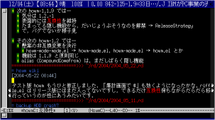
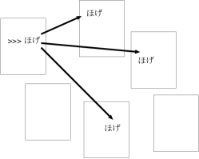
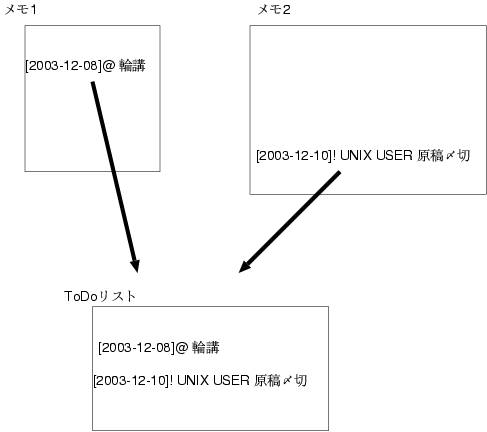

English
Emacs で断片的なメモをどんどんとるための環境です.
分類機能はあえてつけません.
かわりに, 全文検索とメモ間リンクが手軽にできるようにしました.
自由書式なので改宗も不要 :-)
こんな雰囲気
 メモ間リンク (Wiki 風)
メモ間リンク (Wiki 風)
 全文検索 (一覧表示 + 内容表示)
全文検索 (一覧表示 + 内容表示)

連結表示 (検索されたメモの内容をつなげて)
次のように書くだけでリンク


全文検索をフル活用
- 上の文字列リンクも, 実は全文検索のショートカット
- ヒットしたファイルを全部つなげて表示する機能
(→ 断片的メモをばんばんとって OK)
改宗不要. 慣れたスタイルに組み合わせて.
- べたテキストファイル自由書式
- マイナーモードで実装 → 他のモードと併用可
- リンク書式も変更可
HTML への変換が可能
予定表・todo
 「旬度」順 (≠重要順, 日付順)
「旬度」順 (≠重要順, 日付順)
カレンダーへの転記なんて不便
- 次の形式でメモ中に書けば, 自動抽出
[2002-10-22]@ ほげほげ
- 一覧からメモへ一発ジャンプ
- カレンダーソフトへの export も

見ようとしないと見えないんじゃ見ない
- メニューに予定表・todo を表示 → ことあるごとに目に
- 「分類」はしない
todo リストなんてすぐあふれる
件数ふえる → 「重要」しか見ない → ちょっとしたのも「重要」で登録
→ インフレ → 破綻
- 「重要度」は廃止
- かわりに「浮沈方式」で表示順を工夫
- 覚書: 徐々に沈む (どうせ全部はできません :p)
- todo: 徐々に浮かぶ
- 〆切: 指定日が近づくと浮かぶ

日記の気分で
- いつでも C-c , c で新規メモ
- 書いたメモを日付順一覧で眺める
ChangeLog メモの気分で
- C-c , c → メモを開き, 日時や見てたファイル名を自動挿入
- メモファイルの名前や書く場所で迷うことなし.
連結表示で実質的に「ポケット一つ時間順配置」.
- clgrep 相当の「検索 → ヒットしたメモを日付順ソート → 連結表示」
リンクつきテキストの気分で
- 「>>> ~/BabyloniaWave.txt」の上でリターン×2
→ BabyloniaWave.txt を開く
- 「>>> ~/BabyloniaWave.png」の上でリターン×2
→ 画像 viewer を起動
- 「>>> ハイウェイ惑星」の上でリターン
→ 「ハイウェイ惑星」を検索
- 特に, 「研究メモには必ず {S} と書く」のような記号を決めておけば,
「研究メモ一覧 >>> {S}」のようなショートカットができる
Wiki の気分で
- 「[[結晶星団]]」の上でリターンたたくと, WikiName 「結晶星団」のページを作成
- 他のページの「結晶星団」には下線がつく.
リターン 2 回たたくと上のページへジャンプ.
こづかい帳の気分で
- こづかい記号(例: $$$)を決めて, どこかに「<<< $$$」と書いておく
- こづかいを使ったら, 日記中に「$$$ 651円 バビロニアウェーブ」のように書く
(日記に埋め込むのがミソ)
- 「$$$」には下線がつく. リターン 1 回たたくとこづかい一覧が出る.
- 日付範囲や正規表現で絞りこみ
- 一覧上でリターンたたくと該当日記へジャンプ
テーマ別掲示板の気分で
- テーマごとに, 「<<< テーマ名」と書いたメモを作っておく
- テーマ「結晶星団」の掲示板に投稿するには,
メモを書き, どこかに「結晶星団」と書いておく
- 「結晶星団」には下線がつく. リターン 1 回たたくと一覧が出るので,
@ で連結表示 → 新しい順で投稿が並ぶ
「資料(ストック型メモ) + コメント(フロー型メモ)」の気分で
- 資料を書き, どこかに「<<< 資料名」と書いておく
- 資料「結晶星団」にコメントするには,
メモを書き, どこかに「結晶星団」と書いておく
- 一覧 → 連結表示で, 先頭に資料, 後に新しい順でコメントが並ぶ
$Id: index-j.html,v 1.279 2012-12-29 08:57:18 hira Exp $
email アドレスはソースファイル冒頭を参照ください

 メモ間リンク (Wiki 風)
メモ間リンク (Wiki 風) 全文検索 (一覧表示 + 内容表示)
全文検索 (一覧表示 + 内容表示) 「旬度」順 (≠重要順, 日付順)
「旬度」順 (≠重要順, 日付順)